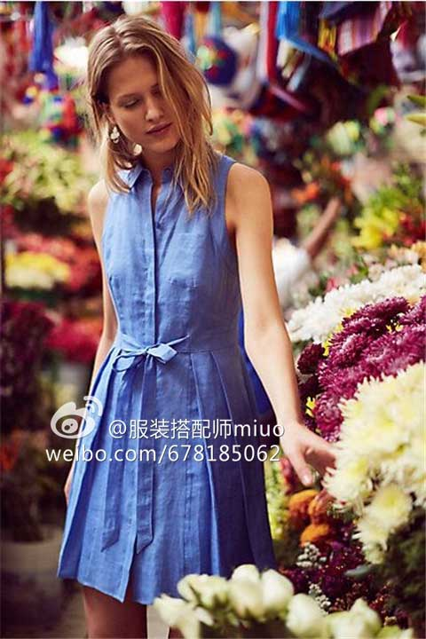
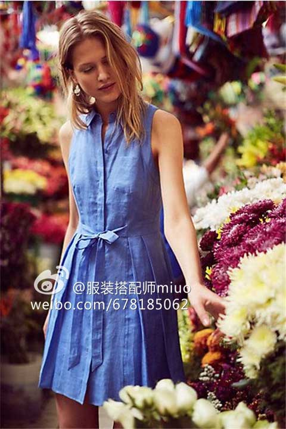

#Miuo搭配课堂#衬衫裙不来一条吗？清纯性感皆可得
2016-05-11 22:42阅读：899
说到衬衫裙，最初我的印象是赫本穿着件男士白衬衫，因此太宽大太长，而可以直接当连衣裙穿，露出大半截大腿，配上齐耳的短发和干净的妆容，明明很性感妩媚，却透着男孩子般的洒脱和自在。
这种自在天然的气息，连作为女性的我看着都动容，也难怪都半个世纪过去了，她依然依然不仅是时尚界的女神，也是广大直男心中的梦里情人。

现在的衬衫裙，款式和式样越来越多，各种长度、直筒和收腰版型的，但不管怎么变，都还是脱离不了那种既清新文艺、又小小流露出妩媚的感觉。
春夏季的时候，找件宽松的衬衫裙，随意套在身上，披着头发、抹个红唇，你走优雅风，那就配芭蕾鞋或尖头高跟鞋，你走文艺范，那就配帆布鞋、绑带鞋。这样就能出门了。简单耐看，舒心自在。
喜欢收腰，就自己在腰间加根系带吧。直筒衬衫裙就秒变收腰款。
这是最简单的套路了，一般都能想到。
还有很多别致设计的衬衫裙，也同样兼备着清纯和性感两种属性，不管是年轻的少女，还是大龄女性，都可以穿出不同的感觉。当然，年纪大的同学建议穿中长款的更优雅。
根据近来的流行趋势，市面上的衬衫裙会和各种流行元素融合。
比如和百褶裙融合。

说了这么多搭配技巧，支持博主原创，不如点击下图去『韩都衣舍京东旗舰店』挑一件连衣裙吧！
这种自在天然的气息，连作为女性的我看着都动容，也难怪都半个世纪过去了，她依然依然不仅是时尚界的女神，也是广大直男心中的梦里情人。
现在的衬衫裙，款式和式样越来越多，各种长度、直筒和收腰版型的，但不管怎么变，都还是脱离不了那种既清新文艺、又小小流露出妩媚的感觉。
春夏季的时候，找件宽松的衬衫裙，随意套在身上，披着头发、抹个红唇，你走优雅风，那就配芭蕾鞋或尖头高跟鞋，你走文艺范，那就配帆布鞋、绑带鞋。这样就能出门了。简单耐看，舒心自在。
喜欢收腰，就自己在腰间加根系带吧。直筒衬衫裙就秒变收腰款。
这是最简单的套路了，一般都能想到。
还有很多别致设计的衬衫裙，也同样兼备着清纯和性感两种属性，不管是年轻的少女，还是大龄女性，都可以穿出不同的感觉。当然，年纪大的同学建议穿中长款的更优雅。
根据近来的流行趋势，市面上的衬衫裙会和各种流行元素融合。
比如和百褶裙融合。

说了这么多搭配技巧，支持博主原创，不如点击下图去『韩都衣舍京东旗舰店』挑一件连衣裙吧！